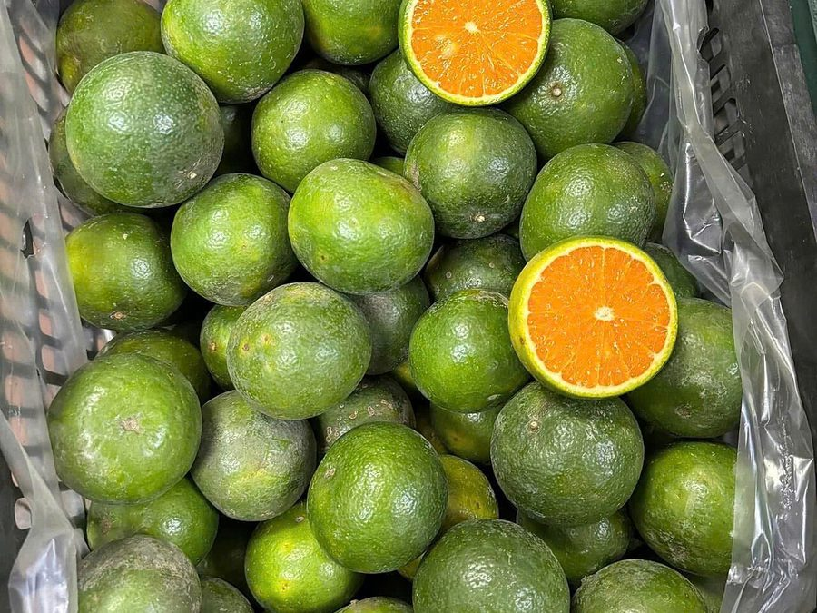

1/1 phiếu đạt. Chỉ số do phòng kiểm nghiệm cung cấp.
| Chỉ tiêu | Kết quả | Giới hạn cho phép | Đánh giá |
|---|---|---|---|
| Dư lượng Chlorpyrifos | 0,008 mg/kg | ≤ 0,5 mg/kg | Đạt |
| Dư lượng Cypermethrin | 0,012 mg/kg | ≤ 0,7 mg/kg | Đạt |
| Hàm lượng Nitrat | 118 mg/kg | ≤ 400 mg/kg | Đạt |
Mockup trang truy xuất — trạng thái cảnh báo thu hồi đặt trên cùng, không bị banner che. Dữ liệu lấy từ API thật khi render.